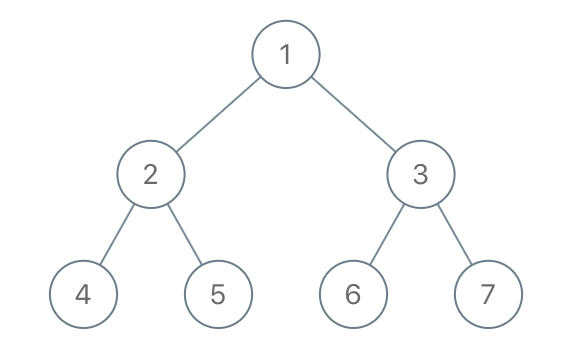

1110. 删点成林
后序递归：删除集里的结点返回 null（从树上断开），它尚存的孩子和没被删的根都收进森林。
思路
- 先把
to_delete放进哈希集合，判断 O(1)。 - 后序递归：先处理完左右子树，再决定自己——在删除集里就返回
null，父亲接住null即断开连接。 - 被删结点的「尚存孩子」就是新树的根，收进答案；递归结束后根若没被删，整棵树也是一棵。
图解
最优解
1import java.util.*;2 3class Solution {4 public List<TreeNode> delNodes(TreeNode root, int[] to_delete) {5 Set<Integer> del = new HashSet<>();6 for (int v : to_delete) del.add(v);7 List<TreeNode> forest = new ArrayList<>();8 root = dfs(root, del, forest); // 后序处理整棵树9 if (root != null) forest.add(root); // 根没被删：它自己是一棵新树的根10 return forest;11 }12 13 // 后序：返回这个位置上保留下来的结点（被删返回 null），被删结点尚存的孩子收进森林14 private TreeNode dfs(TreeNode node, Set<Integer> del, List<TreeNode> forest) {15 if (node == null) return null;16 node.left = dfs(node.left, del, forest);17 node.right = dfs(node.right, del, forest);18 if (del.contains(node.val)) {19 if (node.left != null) forest.add(node.left); // 连接断开，孩子自成新根20 if (node.right != null) forest.add(node.right);21 return null;22 }23 return node;24 }25}题目
给出二叉树的根节点 root，树上每个节点都有一个不同的值。
如果节点值在 to_delete 中出现，我们就把该节点从树上删去，最后得到一个森林（一些不相交的树构成的集合）。
返回森林中的每棵树。你可以按任意顺序组织答案。
示例 1：

输入：root = [1,2,3,4,5,6,7], to_delete = [3,5] 输出：[[1,2,null,4],[6],[7]]
示例 2：
输入：root = [1,2,4,null,3], to_delete = [3] 输出：[[1,2,4]]
提示：
- 树中的节点数最大为
1000。 - 每个节点都有一个介于
1到1000之间的值，且各不相同。 to_delete.length <= 1000to_delete包含一些从1到1000、各不相同的值。
题面取自力扣当前版本。
数据快照 2026-11-04。题面版权归力扣所有，本站点仅供本人学习使用，请勿对外发布。